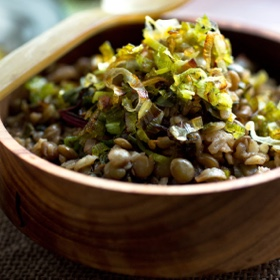

← All recipes
One-Pot Mujadara with Leeks and Greens

Servings: 6 to 8 servings ·
Ingredients
- 1 cup brown or green lentils
- 2 leeks, white and light green parts only, roots trimmed
- 2 1/4 teaspoons salt, more as needed
- 1/4 cup extra-virgin olive oil
- 2 garlic cloves, minced
- 3/4 cup long-grain rice
- 1 1/2 teaspoons ground cumin
- 1/2 teaspoon ground allspice
- 1/4 teaspoon cayenne
- 1 bay leaf
- 1 cinnamon stick
- 4 cups trimmed and chopped spring greens (chard leaves, spinach, kale, mustard or a combination)
Directions
- Place lentils in a large bowl and add warm tap water to cover by 1 inch. Let soak.
- Meanwhile, halve leeks lengthwise; run under warm water to release any grit. Thinly slice leeks crosswise.
- Heat oil in a Dutch oven or large pot over medium-high heat. Add leeks and cook, stirring occasionally, until golden brown and crispy, 5 to 10 minutes. Transfer half the leeks to a bowl to use for garnish and sprinkle with 1/4 teaspoon salt.
- Stir garlic into the pot with the remaining leeks and cook for 15 seconds until fragrant. Stir in rice and sauté 2 minutes. Stir in cumin, allspice and cayenne; sauté 30 seconds.
- Drain lentils and stir into pot. Add 4 1/4 cups water, 2 teaspoons salt, bay leaf and cinnamon stick. Bring to a simmer. Cover and cook over low heat for 15 minutes. Rinse greens in a colander and spread damp leaves over lentil mixture. Cover and cook 5 minutes more, until rice and lentils are tender and greens are wilted. Remove from heat and let stand, covered, for 5 minutes. Serve sprinkled with reserved crispy leeks.
Original source: cooking.nytimes.com